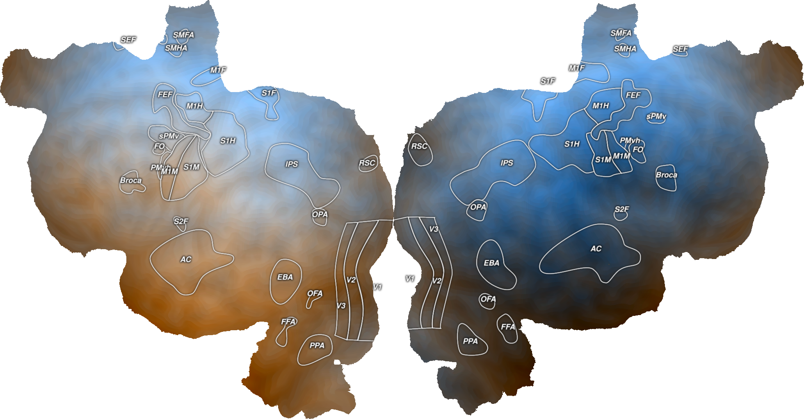

Note
Click here to download the full example code
Plot 2D Volume Data¶
This plots example volume data onto an example subject, S1, onto a flatmap using quickflat. In order for this to run, you have to have a flatmap for this subject in the pycortex filestore.
The cortex.Volume2D object is instantiated with two numpy arrays of the same size as the scan for this subject and transform. Here, there are two datasets that have been generated to look like gradients across the brain, but you can replace these with any numpy arrays of the correct dimensionality.
The colormap used in the first two flatmaps is

As with a 1D Volume, you can change vmin and vmax to threshold, but here they can be manipulated individually for the two arrays.
You can also change the colormap when creating a new 2D volume. The colormap used in the last flatmap is

- 
import cortex
import numpy as np
import matplotlib.pyplot as plt
subject = "S1"
xfm = "fullhead"
# Creating two different test datasets that are both the same shape as this
# transform with one entry for each voxel
# The matrices have just been reordered in different ways so that they make
# gradients across the brain in different directions
test_data1 = np.arange(31 * 100 * 100).reshape((31, 100, 100), order='C')
test_data2 = np.arange(31 * 100 * 100).reshape((31, 100, 100), order='F')
# This creates a 2D Volume object for both of our test datasets for the given
# subject and transform
vol_data = cortex.Volume2D(test_data1, test_data2, subject, xfm)
cortex.quickshow(vol_data, with_colorbar=False)
plt.show()
# You can alter the minimum and maximum values shown on the colorbar and this
# can be done separately for the two different datasets
vol_data = cortex.Volume2D(test_data1, test_data2, subject, xfm,
vmin=np.mean(test_data1), vmax=np.max(test_data1),
vmin2=np.min(test_data2), vmax2=np.mean(test_data2))
cortex.quickshow(vol_data, with_colorbar=False)
plt.show()
# To change the colormap, you have to create a new Volume2D object
vol_color = cortex.Volume2D(test_data1, test_data2, subject, xfm,
cmap="GreenWhiteBlue_2D")
cortex.quickshow(vol_color, with_colorbar=False)
plt.show()
Total running time of the script: ( 0 minutes 8.173 seconds)